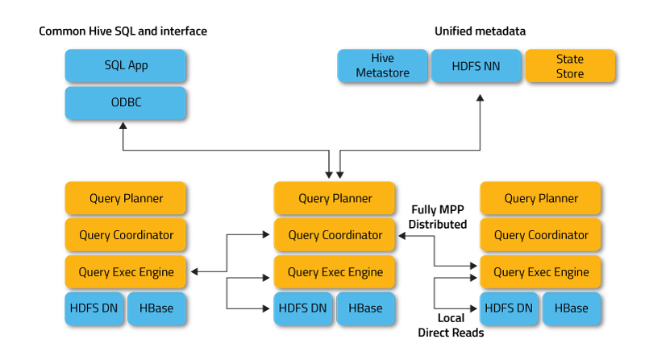

Cloudera Impala
Impala Overview
Impala raises the bar for SQL query performance on Apache Hadoop while retaining a familiar user experience. With Impala, you can query data, whether stored in HDFS or Apache HBase – including SELECT, JOIN, and aggregate functions – in real time. Furthermore, Impala uses the same metadata, SQL syntax (Hive SQL), ODBC driver, and user interface (Hue Beeswax) as Apache Hive, providing a familiar and unified platform for batch-oriented or real-time queries. (For that reason, Hive users can utilize Impala with little setup overhead.)
Architecture
To avoid latency, Impala circumvents MapReduce to directly access the data through a specialized distributed query engine that is very similar to those found in commercial parallel RDBMSs. The result is order-of-magnitude faster performance than Hive, depending on the type of query and configuration. (See FAQ for more details.)

There are many advantages to this approach over alternative approaches for querying Hadoop data, including::
- Thanks to local processing on data nodes, network bottlenecks are avoided.
- A single, open, and unified metadata store can be utilized.
- Costly data format conversion is unnecessary and thus no overhead is incurred.
- All data is immediately query-able, with no delays for ETL.
- All hardware is utilized for Impala queries as well as for MapReduce.
- Only a single machine pool is needed to scale.

Copyright © 2013 Cloudera. All rights reserved. Cloudera Impala is a registered trademark of Cloudera in the United States and in jurisdictions throughout the world. All other company and product names may be trade names or trademarks of their respective owners.